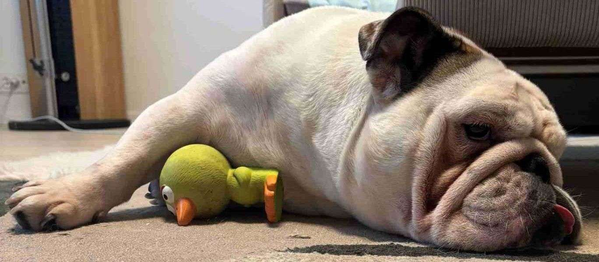

Galleria

Menossa mukana vuodesta 2021
Englanninbulldogit ovat keskikokoisia, lihaksikkaita koiria, joilla on tunnusomainen lyhyt kuono, ryppyinen naama ja roikkuvat posket. Ne ovat yleensä rauhallisia, ystävällisiä ja uskollisia lemmikkejä, jotka tulevat hyvin toimeen lasten ja muiden eläinten kanssa. Rodulla on lyhyt turkki, joka vaatii vähäistä hoitoa, mutta niiden rakenne altistaa ne hengitysvaikeuksille ja lämpöherkkyydelle. Englanninbulldogit tunnetaan myös itsepäisyydestään, mutta ne ovat rakastavia ja omistautuneita perhekoiria.